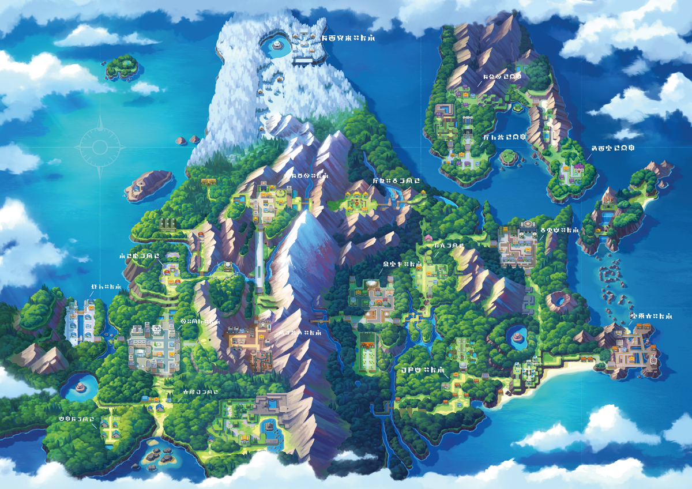

A lo largo del vasto universo Pokémon, las regiones representan los diferentes mundos que los entrenadores han explorado generación tras generación.
Cada una posee su propia geografía, cultura, ecosistema y especies únicas, dando forma a la diversidad y riqueza del mundo Pokémon.
El mundo Pokémon está dividido en diversas regiones, cada una inspirada en lugares reales y con su propio encanto, especies y tradiciones.
Conoce las tierras que han dado vida a las aventuras de los entrenadores desde Kanto hasta Paldea.
Regiones principales
Existen 9 regiones principales en los videojuegos de Pokémon
Kanto
Región de Kanto
Generación: I
Juegos: Rojo, Azul, Verde, Amarillo
Kanto es la región que dio inicio a la franquicia. Inspirada en la prefectura de Kantō en Japón, combina ciudades pequeñas con rutas naturales y montañas. Es famosa por ser donde los entrenadores inician su aventura y capturan a los Pokémon originales como Pikachu, Charmander, Bulbasaur y Squirtle. Además, Kanto introdujo los 151 Pokémon originales y sentó las bases de la mecánica de gimnasios, batallas y evolución.
Pokémon destacados: Pikachu, Charmander, Bulbasaur, Squirtle, Mewtwo.
Johto
Región de Johto
Generación: II
Juegos: Oro, Plata, Cristal
Inspirada en Hawaii, Alola es tropical, soleada y está compuesta por varias islas. Introdujo las formas regionales de Alola, que son variaciones de Pokémon de Kanto adaptadas al clima y cultura local. La región se centra en la vida relajada y la exploración de islas, reemplazando los gimnasios tradicionales por el “Tour Insular”, donde los entrenadores enfrentan retos únicos y guardianes legendarios.
Pokémon destacados: Cyndaquil, Totodile, Chikorita, Lugia, Ho-Oh.
Hoenn
Región de Hoenn
Generación: III
Juegos: Rubí, Zafiro, Esmeralda
Inspirada en Kyushu, Hoenn destaca por su diversidad natural: desde desiertos y volcanes hasta extensos océanos y selvas tropicales. Introdujo mecánicas como habilidades y batallas dobles. La exploración de Hoenn tiene un fuerte componente acuático, con rutas navegables y Pokémon exclusivos de agua. La región también es famosa por sus líderes de gimnasio y la historia centrada en el clima y los legendarios Groudon y Kyogre
Pokémon destacados: Torchic, Mudkip, Treecko, Groudon, Kyogre.
Sinnoh

Región de Sinnoh
Generación: IV
Juegos: Diamante, Perla, Platino
Basada en Hokkaido, Sinnoh combina montañas nevadas, lagos cristalinos y ciudades modernas con toques tradicionales. Introdujo nuevas formas de evolución, como la amistad y la evolución por piedra, y presentó a los legendarios que representan la creación del universo Pokémon: Dialga, Palkia y Giratina. La historia de Sinnoh es más profunda, explorando temas de origen y balance del mundo Pokémon.
Pokémon destacados: Turtwig, Chimchar, Piplup, Dialga, Palkia, Giratina.
Unova o Teselia
Región de Unova o Teselia
Generación: V
Juegos: Negro, Blanco, Negro 2, Blanco 2
Inspirada en Nueva York, Unova es la primera región completamente nueva en la serie, con un diseño urbano y cosmopolita. Introdujo únicamente Pokémon nuevos en su primera generación, destacando por su diversidad de biomas: desde ciudades modernas hasta desiertos, bosques y zonas nevadas. La historia de Unova se centra en los ideales, la moralidad y los equipos villanos que buscan controlar a los Pokémon legendarios.
Pokémon destacados: Snivy, Tepig, Oshawott, Reshiram, Zekrom.
Kalos
Región de Kalos
Generación: VI
Juegos: X y Y
Basada en Francia, Kalos se caracteriza por su elegancia, moda y arquitectura europea. Introdujo las Mega Evoluciones, un sistema que permite a ciertos Pokémon alcanzar un poder temporal superior en batalla. Kalos también destacó por la interacción con concursos y competencias de belleza Pokémon, además de ofrecer rutas panorámicas, ciudades con inspiración parisina y Pokémon que reflejan cultura y estilo europeo.
Pokémon destacados: Chespin, Fennekin, Froakie, Xerneas, Yveltal.
Alola
Región de Alola
Generación: VII
Juegos: Sol y Luna, Ultrasol y Ultraluna
Inspirada en Hawaii, Alola es tropical, soleada y está compuesta por varias islas. Introdujo las formas regionales de Alola, que son variaciones de Pokémon de Kanto adaptadas al clima y cultura local. La región se centra en la vida relajada y la exploración de islas, reemplazando los gimnasios tradicionales por el “Tour Insular”, donde los entrenadores enfrentan retos únicos y guardianes legendarios.
Pokémon destacados: Rowlet, Litten, Popplio, Solgaleo, Lunala.
Galar
Región de Galar
Generación: VIII
Juegos: Espada y Escudo
Basada en Reino Unido, Galar combina zonas industriales, pueblos rurales y paisajes naturales. Introdujo las mecánicas de Dinamax y Gigamax, donde los Pokémon pueden crecer enormemente en tamaño y poder durante batallas. La región enfatiza la cultura deportiva, con estadios espectaculares, ligas Pokémon competitivas y un fuerte enfoque en entrenadores y torneos.
Pokémon destacados: Grookey, Scorbunny, Sobble, Zacian, Zamacenta.
Paldea
Región de Paldea
Generación: IX
Juegos: Escarlata y Púrpura
Inspirada en la Península Ibérica, Paldea es una región abierta y expansiva, pensada para la exploración libre. Introdujo la mecánica de Pokémon Teracristalizados, que transforma a los Pokémon temporalmente durante el combate. Paldea mezcla ciudades modernas con campos y paisajes variados, fomentando aventuras personalizadas, desafíos libres y descubrimiento constante de Pokémon nuevos y legendarios.
Pokémon destacados: Sprigatito, Fuecoco, Quaxly, Koraidon, Miraidon.
Regiones secundarias
Pokémon Ranger
Juego Pokémon Ranger | Nintendo DS
En los juegos de la saga Pokémon Ranger, los jugadores exploran regiones únicas que no forman parte de las zonas tradicionales de la saga principal. Las regiones de Fiore y Almia destacan por sus paisajes variados, desde verdes praderas y bosques hasta áreas montañosas y cuerpos de agua, ofreciendo un ecosistema rico en Pokémon y entornos. Estas regiones se caracterizan por estar diseñadas específicamente para la interacción con los Pokémon en su hábitat natural, permitiendo descubrir criaturas que solo se encuentran allí y experimentar cómo se relacionan entre sí y con el entorno. La originalidad de Fiore y Almia reside en que son regiones construidas exclusivamente para estas aventuras spin-off, mostrando una visión del mundo Pokémon donde la exploración y el estudio del ecosistema tienen un papel central, y donde cada zona tiene su propio carácter, clima y especies endémicas.
Spin-offs
Región de Orre
Los spin-offs de Pokémon presentan regiones secundarias únicas que no aparecen en los juegos principales, ofreciendo entornos distintos y originales. Un ejemplo destacado es la región de Orre, protagonista de Pokémon Colosseum y Pokémon XD: Gale of Darkness, un área desértica y árida con ciudades oscuras, laboratorios y ruinas que contrastan con las regiones más verdes y tradicionales de la saga principal. En estas regiones, cada ciudad, pueblo o desierto tiene su propio estilo y carácter, y la geografía está diseñada para un entorno más narrativo y misterioso. Otro ejemplo es la Isla Pokémon de Pokémon Snap, un lugar totalmente natural dividido en playas, junglas, desiertos y lagos, donde cada bioma alberga Pokémon específicos que solo se pueden observar allí, mostrando la diversidad de ecosistemas que los spin-offs exploran más allá de los mapas de los juegos principales.
Regiones especiales
Región de Ransei
Además de las mencionadas, otros spin-offs incluyen regiones especiales como Ransei en Pokémon Conquest, que combina territorios y paisajes inspirados en escenarios históricos japoneses, y las expansiones de Fiore y Almia en los juegos de Pokémon Ranger, que amplían los entornos con nuevas áreas, biomas y especies únicas. Estas regiones especiales tienen en común que fueron creadas exclusivamente para sus respectivos spin-offs, ofreciendo experiencias distintas de exploración y observación de Pokémon. Representan una manera de ampliar el mundo Pokémon, mostrando lugares inéditos con su propio clima, geografía, flora y fauna, reforzando la idea de que el universo Pokémon va mucho más allá de las regiones tradicionales de la saga principal.